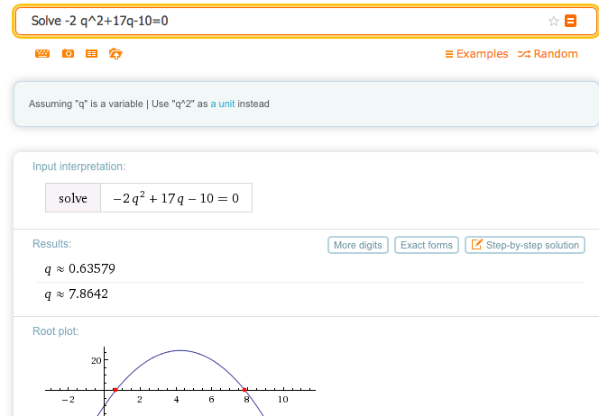
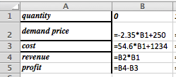
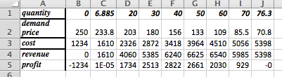
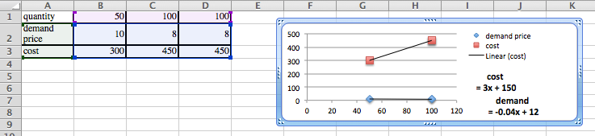

Section 2.2 Modeling Revenue, Costs, and Profit
¶Link to worksheets used in this section
In the last section we looked at the economic model for supply and demand. We were particularly interested in the point of market equilibrium. In this section we will look at the model for revenue, cost and profit. As with the previous section we will begin with assumptions that make as many things as possible linear.
Revenue and a review of demand price:
The simple model for revenue is
However, in the previous section we worked with two price functions, the supply price and the demand price. Since we can only make a sale if the consumer is willing to buy, we typically use the demand price in computing revenue. Our model is now
If the demand price is a linear function, then revenue is a quadratic function.
We previously noted that a linear demand price function has a negative slope. We should note the two limiting cases. If the slope of the demand curve is 0, the consumers have a fixed price they will pay for however much of the product is available. In this case the demand curve is a constant, so the revenue curve will be linear. This is referred to as a perfectly elastic market. The other limiting case is where the demand is for a fixed amount no matter what the price. In this case the demand curve is a vertical line and is not a function, so the revenue curve also fails to be a function of quantity.

Obviously, we don’t expect to find the limiting cases in the real world. In real world cases the revenue function has a negative coefficient for the quadratic term and is a downward facing parabola.

Example 2.2.1. Finding Revenue From Linear Demand Price.
We have determined that the demand price function for widgets is
if the quantity is between 2000 and 8000. Find the revenue function and graph it over the region where it is defined.
Solution: We set up a chart in Excel with revenue defined as \(supply\ price * quantity\text{.}\)

When we graph we note that the scales are quite different for price and revenue. Thus we want to use secondary axes to capture the scale of both price and revenue. We can also put different labels on the two vertical axes.
Cost:
Once again we will start with a simplified model for cost.
For our (simplified) model we will break costs into fixed costs and variable costs.
Fixed costs include the costs of being in business. They might include license fees, rent for a store or plant, and the cost of furnishings and equipment.
Variable costs are tied to the amount you produce or sell. They might include raw material for a manufacturer or the cost of goods for someone in sales.
For our simplified model we assume that variable costs are proportional to quantity. This makes our cost function linear.
For our simplified model variable costs= unit costs*quantity.
Thus costs= fixed costs + unit costs*quantity.

Example 2.2.2. Finding Linear Cost.
We can set up a small gizmo manufacturing shop for $6,000. The raw materials for producing gizmos cost $14 per unit. Find the cost function for gizmo production. Find the cost of producing 2500 gizmos.
Solution: The fixed costs are the \(y\) value of the \(y\)-intercept of the cost function. The per unit material cost is the slope of the function. We have
If we substitute 2500 for the quantity, our costs are
Profit:
For the third piece of the model, we look at profit. We have the simple formula
For our simple examples where cost is linear and revenue is quadratic, we expect the profit function to also be quadratic, and facing down. We will obviously be interested in the spots where the profit function either crosses the axis or reaches a maximum.

Example 2.2.3. Finding Profit.
We are interested in selling widgets. The demand price function is
It will cost $10,000 to keep our shop open before we consider the price of inventory. Our variable cost is the cost of buying the widgets from our wholesaler who will sell them to us for $8 a unit. Find a function for profit as a function of how many units we sell. Graph that function for quantities from 1000 to 10000.
Solution: Using the methods from the previous examples, we write down the functions for revenues and costs.
Now we find profit as the difference of revenue and cost.
We then use Excel to make a chart of values and a graph.

Break-Even Point:
The last example illustrates a reality of manufacturing and retail. If a business has a fixed cost or startup expense, it will have a loss if it does not sell enough.
The point at which revenues equal expenses (cost) is called the break-even point.
This is important in preparing a business proposal, because the bank will want to know if the break even point is a reasonable amount before it lends any money.
Example 2.2.4. Find Break-Even Points.
Find break-even points for previous example. Explain what those points mean in practical terms.
Solution: We look at the chart from the previous example.
We can find break-even points by using Goal Seek and setting profit to 0 while changing quantity. In this case, we see that we have break-even points when the quantity is 2000 or 5000, since those numbers were already on our chart.
The first break even point tells us that we need to lower our price to no more than $13.00 to attract enough customers to be able to turn a profit. The second break even point says that is we bring our price down below $10, we will not be able to bring in enough customers to make a profit.
Example 2.2.5. Repeat, Starting With Data.
We have the following data from the gizmo market.
| Quantity | 8.03 | 9.92 | 12.21 | 14.05 | 15.85 |
| Demand Price | $9.12 | $7.95 | $6.92 | $6.08 | $5.14 |
| Cost | $60.47 | $71.23 | $78.45 | $89.60 | $101.03 |
Assuming that price and cost are well modeled by linear equations, find the break-even points and explain what they mean with units included in the explanation.
To find the break-even point when we are given data instead of an equation, we usually follow this procedure: Find the best fitting equations for price and cost. From those equations, produce formulas for revenue and profit. Use the formulas to find the break-even points using either algebra or Excel.
Solution: We put the data into Excel and ask for best fitting lines.
This produces the desired cost and price functions.
We enter these functions in new columns in the spreadsheet and then compute projective revenues and profit. We then use Goal Seek to find places where the projected profit is 0. The first break-even point tells us that we expect to break even if we sell 3.09 million units. We can do that by setting the price at $11.47. The second break-even point is at 13.01 million units. We reach that sales volume by lowering the price to $6.55. While we will have gained market share, we will no longer be making a profit.
Exercises 2.2.1 Exercises: Modeling Revenue, Costs, and Profit
¶For problems 1-8, given the equations of the cost and demand price function:
Identify the fixed and variable costs.
Find the revenue and profit functions.
Evaluate cost, demand price, revenue, and profit at \(q_0\text{.}\)
Find all break-even points.
Graph the profit function over a domain that includes both break-even points. Add a textbox and label to identify the first break-even point.
1.
Given \(demand\ price=-2 quantity+20\) and \(cost=3 quantity+10\text{,}\) with \(q_0=6\text{.}\)
-
Identify the fixed and variable costs.
The fixed cost is $10 (the constant/fixed part of the cost function), and the variable cost is $3 per item.
-
Find the revenue and profit functions.
\begin{align*} Revenue\amp=demand\ price*quantity\\ \amp=(-2 q+20)*q=-2 q^2 +20 q \end{align*}\begin{align*} Profit=revenue-cost \amp=-2 q^2 +20q-(3q+10)\\ \amp=-2 q^2+17q-10 \end{align*} -
Evaluate cost, demand price, revenue, and profit at \(q_0\text{.}\)
\begin{equation*} cost(6)=3 (6)+10=28 \end{equation*}\begin{equation*} demand price(6)=-2 (6)+20=8 \end{equation*}\begin{equation*} Revenue(6)=-2 6^2 +20 (6)=-72+120=48 \end{equation*}\begin{equation*} Profit=revenue-cost =48-28=20 \end{equation*} -
Find all break-even points.
Solve \(Profit=-2 q^2+17q-10=0\text{.}\) We can do this with Excel or with Wolfram. The break even points are \(q = 0.6\) and \(q = 7.9\)
 -
Graph the profit function over a domain that includes both break-even points. Add a textbox and label to identify the first break-even point.
If we had done the whole problem in Excel it would look like this:

Entries in the cells before quick fill

The table with \(q\) between 0 and 8

Goal Seek gives break even points at \(q = 0.64\) and \(q = 7.86\)

The graph produced in Excel. To create the labels: double click on one of the break-even points, go to “Chart Layout”, go to “Data Labels”. In this example we chose the “x-value”. Both break-even points were labeled to show where they are and what the values are in this problem.
2.
Given \(demand\ price=- quantity/10+50\) and \(cost=10 quantity+1000\text{,}\) with \(q_0=300\text{.}\)
3.
Given \(demand\ price=-2.35 quantity+250\) and \(cost=54.6 quantity+1234\text{,}\) with \(q_0=59\text{.}\)
-
Identify the fixed and variable costs.
\(Fixed\ cost = \$1234\text{,}\) and the \(variable cost =\$54.60\) (per unit)
-
Find the revenue and profit functions.
\begin{equation*} Revenue=q(-2.35 q+250)= -2.35 q^2+250 q \end{equation*}\begin{align*} Profit=revenue-cost \amp=-2.35 q^2+250 q-(54.6q+1234)\\ \amp=-2.35 q^2+195.4 q-1234 \end{align*} -
Evaluate cost, demand price, revenue, and profit at \(q_0\text{.}\)
Entries in the cells before quick fill

Table plus extra column for the value \(q = 59\)
At \(q =59\text{,}\) \(cost = \$4455.40\text{,}\) \(demand\ price = \$111.35\text{,}\) \(revenue = \$6569.65\text{,}\) and \(profit = 2114.25\)
-
Find all break-even points.
Table plus extra column for the value \(q = 59\)
The break-even points are \(q = 6.9\) and \(q = 76.3\)
-
Graph the profit function over a domain that includes both break-even points. Add a textbox and label to identify the first break-even point.

The graph produced in Excel. To create the labels: double click on one of the break-even points, go to “Chart Layout”, go to “Data Labels”. In this example we chose the “x-value”. Both break-even points were labeled to show where they are and what the values are in this problem.
4.
Given \(demand\ price=-0.0023 quantity+9\) and \(cost=1.39 quantity+1398.7\text{,}\) with \(q_0=687\text{.}\)
5.
Given demand price and cost are the linear functions that best fit the data below and that \(q_0=75\text{.}\)
| Quantity | 50 | 100 |
| Demand price | 10 | 8 |
| Cost | 300 | 450 |
-
If the table only has 2 data points, Excel can get confused wether the data is in rows or columns. We duplicated one column to get the data plotted correctly.
Identify the fixed and variable costs.\(Fixed\ cost = \$150\text{,}\) and the \(variable cost =\$3\) (per unit)
-
Find the revenue and profit functions.
\begin{equation*} Revenue=q(-0.04q+12)= -0.04 q^2+12x \end{equation*}\begin{align*} Profit=revenue-cost \amp=-0.04 q^2+12q-(3q+150)\\ \amp=-0.04 q^2+9q-150 \end{align*} -
Evaluate cost, demand price, revenue, and profit at \(q_0\text{.}\)
At \(q =75\text{,}\) \(cost = \$375\text{,}\) \(demand\ price = \$9\text{,}\) \(revenue = \$675\text{,}\) and \(profit = 300\)
-
Find all break-even points.
The break-even points are \(q = 6.9\) and \(q = 76.3\)
-
Graph the profit function over a domain that includes both break-even points. Add a textbox and label to identify the first break-even point.
Entries in the cells before quick fill
Table plus extra column for the value \(q = 59\)
Table plus extra column for the value \(q = 59\)
The graph produced in Excel. To create the labels: double click on one of the break-even points, go to “Chart Layout”, go to “Data Labels”. In this example we chose the “x-value”. Both break-even points were labeled to show where they are and what the values are in this problem.
6.
Given demand price and cost are the linear functions that best fit the data below and that \(q_0=110\text{.}\)
| Quantity | 60 | 70 | 90 | 100 |
| Demand Price | 19 | 16 | ||
| Cost | 460 | 540 |
7.
Given demand price and cost are the linear functions that best fit the data below and that \(q_0=75\text{.}\)
| Quantity | 4356 | 4792 | 6503 | 7038 |
| Demand price | $1.10 | $.98 | ||
| Cost | $1190 | $1860 |
We plot the data, and find the linear models for demand and cost.

Given the demand price and the cost we create a table using the formulas and we also include a row for the \(revenue =( demand\ price * quantity)\) and \(profit =(revenue – cost)\)
-
Identify the fixed and variable costs.
The fixed cost is - $169.35, and the variable cost is $0.3121 per unit of quantity. (That the fixed costs are negative should make us suspicious that we are outside the useful domain of our cost function.)
-
Find the revenue and profit functions.
\begin{equation*} Revenue= 5*(10)^{-5} x^2+1.356x \end{equation*}\begin{align*} profit\amp= 5*(10)^{-5} x^2+1.356x- 0.3121 x+169.35\\ \amp= 5*(10)^{-5} x^2+1.0439x+169.35 \end{align*} -
Evaluate cost, demand price, revenue, and profit at \(q_0\text{.}\)
At \(q = 75\) we have that cost = - $146, demand price = $1.35, revenue = $101.42, and profit = $247
-
Find all break-even points.
Re-compute profit for a different range of quantities and we get

Goal Seek using the quantity of 20000 as the basis gives a break-even point at \(q= 21,039\text{.}\) The other place where the profit is 0 occurs for \(q = -161\text{.}\)
-
Graph the profit function over a domain that includes both break-even points. Add a textbox and label to identify the first break-even point.

The profit function shows the break-even points close to 0 (-161) and near 20,000 (21,039)
8.
Given demand price and cost are the linear functions that best fit the data below and that \(q_0=7500\text{.}\)
| Quantity | 5378 | 7984 | 8352 |
| Demand price | $12.00 | $10.00 | |
| Supply price | $31,100 | $45,100 |
9.
Mary has been put in charge of a school function. She estimates that there is a fixed cost of $1000 for the site plus a cost of $5 per person that attends. If she charges $15 a ticket she can sell 250 tickets, but if she lowers the price to $10 she can sell 500 tickets. Assuming the demand price is linear, what price should she charge to break even while maximizing attendance?
The description of the cost function states that the fixed cost is $1000, and the variable cost is $5, so the cost function is \(cost=5 q+1000\)
Two points are given for the price function: \((q_1 ,p_1 )=(250,15)\) and \((q_2 ,p_2 )=(500,10)\text{.}\) Hence the slope is \(m= (15-10)/(250-500)= -5/250= -1/50=-0.02\)
Then the demand price function is \((p-p_0 )= m (q-q_0)\) Hence
Entries in the cells before quick fill

Values after quick fill

Identified the break-even points using Goal Seek
The optimal demand price is $6.48, which allows them to sell 676 tickets and break even.
For problems 10-12, given the cost and demand data:
Find best fitting equations of the cost and demand curves, assuming they are both linear.
Find the revenue and profit functions and evaluate them at the extra given value.
Find the break-even points.
10.
Given
| Quantity | 100 | 120 | 140 | 160 | 180 | 155 |
| Cost | 1015 | 1152 | 1327 | 1467 | 1651 | |
| Demand price | 21.3 | 18.1 | 14.7 | 12.3 | 8.6 |
11.
Given
| Quantity | 5021 | 6051 | 6968 | 7901 | 9023 | 9917 | 7500 |
| Cost | 80376 | 103874 | 128513 | 140258 | |||
| Demand price | 19.69 | 18.78 | 18.05 | 17.61 |
-
Find best fitting equations of the cost and demand curves, assuming they are both linear.
Using trendlines we get
\begin{equation*} Cost = 12.175x + 19117 \end{equation*}\begin{equation*} Demand = - 0.0005x + 22.506 \end{equation*} -
Find the revenue and profit functions and evaluate them at the extra given value.
Creating a table with the cost and demand functions we get

We see that when quantity is 7500 the revenue is $140,670, and the profit is $30, 240.50.
-
Find the break-even points.
Note that these values are not usefull for finding the break-even points. To find those we will start quantity \(q\) at 0 and go up to 20,000

So the two break-even points are \(q = 2054.8\) and \(q = 18,607.2\text{.}\)
12.
Given
| Quantity | 3160 | 3615 | 4092 | 4462 | 4837 | 5261 | 5579 | 6000 |
| Cost (Thousands) | 90.1 | 126.70 | 197.2 | 234.9 | ||||
| Demand price | 25.31 | 20.91 | 17.04 | 14.37 |